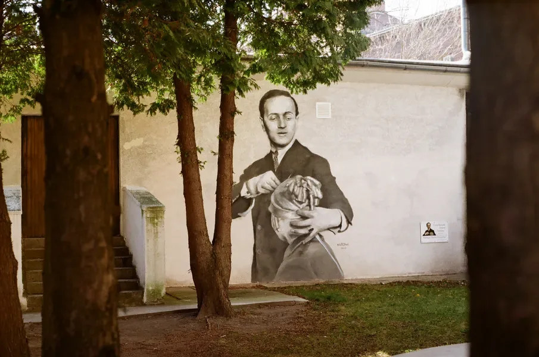
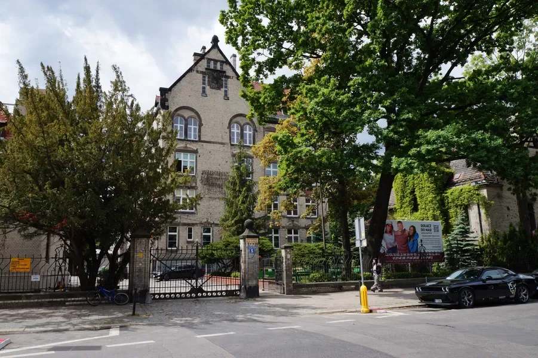

To jest ZSZ nr 5

Zespół Szkół Zawodowych nr 5 we Wrocławiu
System edukacji w Polsce
Do 18. roku życia uczy się każdy. Drogi są różne.
Po szkole podstawowej uczeń wybiera liceum, technikum albo szkołę branżową. Każda z tych dróg może doprowadzić aż na studia.
Szkoła dualna bez żargonu
Szkoła dualna? Najprościej: zawodu uczysz się także w firmie.
W branżowej szkole I stopnia teoria nie wisi w powietrzu. Uczeń omawia zasady w szkole, a potem sprawdza je przy prawdziwym stanowisku pracy.

To model dla osób, które chcą szybciej poczuć odpowiedzialność: za klienta, termin, narzędzia i efekt.
Pracownie i nauczyciele
Najlepiej opowiedzieć szkołę przy stanowisku.
W gastronomii pachnie ciastem i przyprawami. We fryzjerstwie liczy się ruch dłoni. W handlu, rozmowa, produkt i odpowiedzialność za klienta.
Nasi nauczyciele nie uczą zawodu z dystansu. Są obok: pokazują, poprawiają, wymagają i zostawiają uczniowi przestrzeń, żeby zrobił to sam.
Zawody
~1000 uczniów. Wiele zawodów. Własna droga.
Każda nazwa to inny start: pracownia, pracodawca, technikum i własny rytm pracy.
Tu nie ma jednej ścieżki dla wszystkich. Jest wybór, który szybko nabiera realnego kształtu.
Około 1000 uczniów oznacza około 1000 historii dojścia do zawodu.
Projekty i świat poza szkołą
ZSZ nr 5 działa w rytmie miasta, firm i Europy.
Dlatego ZSZ nr 5 wychodzi poza lekcje: do pracodawców, projektów miejskich i unijnych, mobilności oraz partnerstw, które rozwijają uczniów i kadrę.
Tradycja, konkursy, charakter
Ta szkoła ma pamięć i ambicję.
Od ponad 80 lat szkoła kształci kolejne pokolenia. Jan Kiliński przypomina o godności rzemiosła, mural Antoine'a Cierplikowskiego o ambicji, a konkursy o pracy pod presją.
Gdzie jesteśmy
ul. Jana Władysława Dawida 5
Szkoła znajduje się w centrum Wrocławia, przy ul. Dawida 5, bardzo blisko Dworca Głównego. To ważny atut dla uczniów dojeżdżających z miasta i okolic.
ZSZ nr 5 najłatwiej zrozumieć przez ludzi i miejsca: nauczycieli, uczniów, pracownie, pracodawców oraz codzienną pracę przy zawodzie.
Chcesz wiedzieć więcej?
Sprawdź nasze strony i media społecznościowe.
ZSZ nr 5 Wrocław,